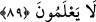

bütün ihtişamıyla kavminin karşısına çıktığında bazı kimseler: “Keşke şu Karun’a
verilenler bize de verilseydi.’ (el-Kasas, 27/69) demişlerdir. Bu sebepledir ki
zenginlerle ve hükümdar çocuklarıyla beraberlikten sakındırılmıştır. Bir hadiste şöyle
buyrulmuştur: “Ölülerle” yani zenginlerle “aynı mecliste bulunmayınız.”[70]
Ebü’d-Derdâ (r.a.)’ın şöyle dediği rivayet edilir: “Bir kasrın tepesinden düşüp
parçalanmam benim için gâfil zenginlerle bir mecliste oturmaktan daha sevimlidir.
Çünkü onlarla birlikte oturmakla onların halleri insana sirayet eder, onlarla beraberliğin
tesiri olur.”
Rüzgar kötü kokulu bir yerden geçince
Pis havanın kötü kokusunu alıp getirir
Ebû Bekir (r.a.) şöyle dua edermiş: “Allah’ım bana dünya nimetlerini bol bol ver,
ama onlardan el etek çekmemi sağla, dünya nimetlerini kısarak beni onlara
imrendirme.”
“Ey Rabb’imiz, onların mallarını yok et,” Bu, Fir’avn ve adamlarını uyardıktan ve
îmân etmeyeceklerini kesin olarak anladıktan sonra yapılmış bir bedduadır. Bedduadan
önce insanları saptırdıkları zikredilmesi, bedduaya bir hazırlık ve saptırmaları
yüzünden buna müstahak oldukları bilinsin içindir.
Bu bedduanın mânâsı şöyledir: Bu mal-mülkün onlara sağlayacağı faydayı gider. Bu
malları şu anki görünüşlerinden uzaklaştırıp değiştir. Çünkü sen Fir’avn ve adamlarına
bu nimetleri sana kulluk etmede ve yoluna girmede yardımcı olarak kullanmalarını
emrettiğin halde onlar verdiğin bu nimetler vâsıtasıyla sana isyan ediyorlar.
Derler ki: “Bunun üzerine bütün altın ve gümüş paraları, ceviz, biber, mercimek gibi
yiyecekleri, eski şekilleri üzere nakş ve resmedilmiş taşlara dönüşmüştür. Yumurta ve
diğer malları da öyle olmuştur. İşte bu Musa (a.s.)’ın dokuz mûcizesinden biridir.”
“kalplerine sıkıntı ver” yani, kalplerini katılaştır, îmân girmesin diye kalplerini
mühürle “ki acı azabı görünceye kadar” yani azabı gözleriyle görmeleri için veya
görene kadar “inanmasınlar.” yâni onu görsünler ve kendilerine hiçbir fayda
sağlamayacağı zaman kesin olarak ona inansınlar.
Musa’nın dediği gibi de oldu, çünkü onlar boğuluncaya kadar inanmadılar.
Boğulurken ettikleri îmân ise ye’s/ümitsizlik esnasında edildiği için makbul olmadı.
89. Allah: “İkinizin duası kabul olundu. Dosdoğru olun, sakın bilmeyenlerin yoluna
uymayın.” buyurdu.